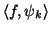
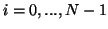
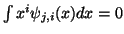
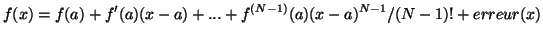
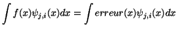

Il y a deux raisons. La première est qu'un repère est toujours doté d'un repère dual c'est-à-dire qu'étant donné un repère , il existe un repère dual  tel que  ou  selon le cas. La deuxième raison est que la propriété qui définit un repère nous permet d'affirmer que si deux signaux sont proches, alors leur transformation ( ) sera proche, et aussi que si deux transformations sont proches, alors les signaux doivent être proches. Cette dernière propriété est essentielle parce qu'elle signifie que tant que l'on ne modifie que légèrement les coefficients d'ondelette, le signal équivalent ne sera que légèrement modifié (stabilité algorithmique).